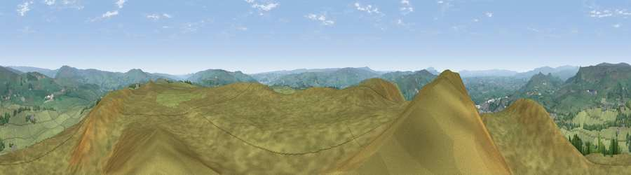

Viewpoint near Skipton
#6785 in England · top 4% of its area beats it · near SkiptonWhere it is
The exact computed spot (SE 01475 50925). Click the marker for map links.
The view, rendered

A 360° render of this exact spot computed from the terrain model, tree cover and land cover — summer colours, afternoon light, calibrated against photographs of famous viewpoints. Real trees, hedges and buildings will differ in detail.
The panorama
Grey silhouette: terrain skyline in each direction (720 bearings, Earth curvature and refraction included). Dashed green: skyline with trees (+15 m) and buildings (+8 m) as obstacles. Blue strip: how far the ground is visible on each bearing.
Where the view opens
Wedge length = distance to the farthest visible ground on that bearing (vegetation-aware). Rings at 10, 25 and 50 km.
What fills the view
93% grassland · 5% woodland · 1% built-up
Angular shares of the visible panorama (visual magnitude), not map area. Landscape diversity 0.13 (0–1 Shannon).
Key numbers
More beautiful places nearby
The staircase of upgrades: each row has a higher view potential than everything closer. Driving times are estimates from straight-line distance, calibrated against real road routing — check an actual route before setting out.
| Place | Direction | Drive | Score |
|---|---|---|---|
| Viewpoint near Embsay | NNW · 6 km | ~12 min | 74.5 |
| Cracoe Fell | NNW · 8 km | ~16 min | 75.1 |
| Viewpoint near Bewerley | NE · 17 km | ~30 min | 75.7 |
| Viewpoint near Bewerley | NE · 17 km | ~30 min | 76.8 |
| Viewpoint near Otley | ESE · 20 km | ~34 min | 77.5 |
| Little Ingleborough | NW · 35 km | ~54 min | 78.8 |
| Viewpoint near Ingleton | NW · 36 km | ~55 min | 79.5 |
| Whernside | NW · 41 km | ~61 min | 79.9 |
53.95442, -1.97901 · source: screening · position refined by local search. Computed location — check access rights before visiting.